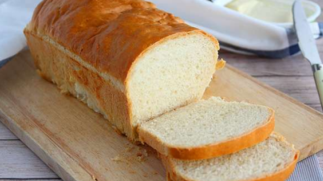
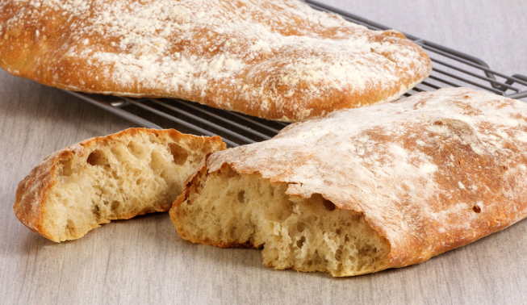
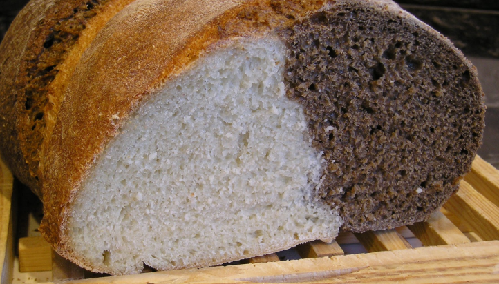

Pão de forma
Pão branco macio cortado em fatias e comumente usado em sanduíches.

Pao de alho
Este pão é infundido com alho e manteiga e assado até ficar dourado e perfumado, muitas vezes servido como aperitivo.

Ciabatta
Pão italiano com crosta crocante e miolo irregular, ideal para sanduíches.
Breve...

Pão naan
Pão achatado e esponjoso nativo da Índia, geralmente cozido em tandoor (forno de barro).

Pão de malte
Um pão feito com malte, o que lhe confere um sabor único e levemente adocicado.